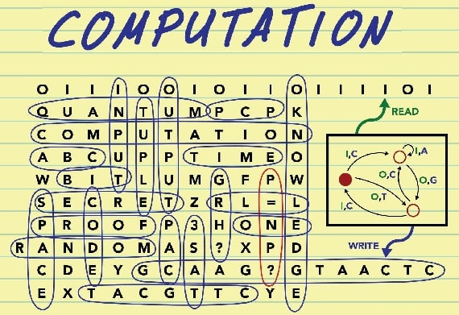
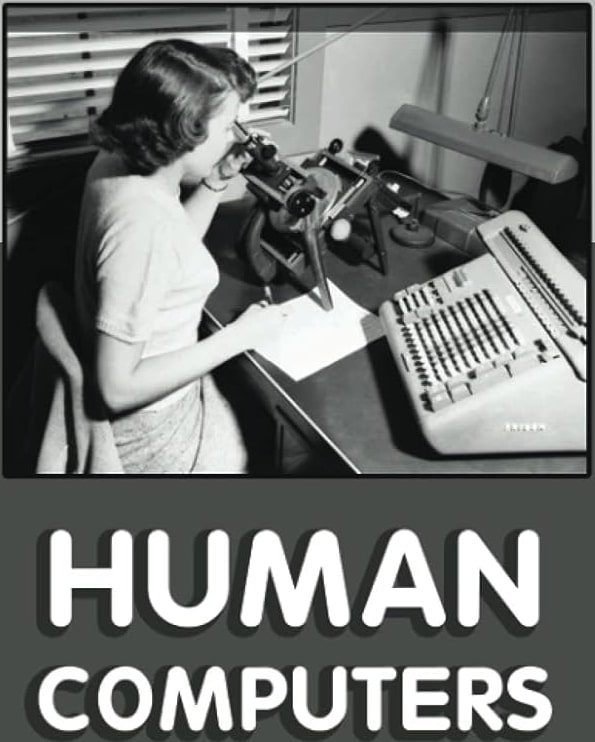

Computing and Crucible Eras
This article focuses not on any specific games but on the broader historical context in which games and gaming came to be situated in a technology context, specifically that of computing.
A Basis in Experimentation ...
Exploring the early days of computing and game development is like peering into the Wild West of technology. In the nascent stages, hobbyists — armed with programming languages like BASIC — were similar to pioneers in uncharted territory. These early game developers weren't just coding; they were conducting experiments, pushing the limits of the available technology to see what it could do.
It was a fusion of creativity and curiosity, where every line of code was a step into the unknown. Much like scientists in a lab, these early hobbyists were learning by doing, discovering the capabilities and constraints of the hardware and the software they could run on it as they went along.
Crucially, these games weren't just entertainment; they were manifestations of the evolving relationship between humans and machines, each line of code a small triumph in the ongoing saga of technological discovery. It was a time when the boundaries of possibility were drawn by the imaginations of those who cared enough or were interested enough to experiment with the digital frontier.
... But a Focus on Computation
Arguably, computer science should have been called computing science. Or, there should have been a shift to that terminology as the technology evolved beyond the hardware itself and into what the software running on that hardware actually did.

When I say "computation," please understand that this isn't just about the mechanics of programming or coding. It's about computational design, the latest incarnation of which engineers create in artificial intelligence applications.
As a matter of interest, artificial intelligence grew up with the idea of technology-based gaming and continues to be used in that context today.
Computation has always been, and still is, what transforms the design of our products and services. The history of design in this context has always been an exciting interplay of various dynamics. These dynamics have engineers considering which problems require solutions from a design perspective, which users are prioritized in the design process, and what considerations are given to other technological systems. Eventually, this morphed into looking at who holds the authority to establish technical and economic priorities.
Interestingly, these are fundamentally social considerations that intricately mold the trajectory of technological development. In essence, the evolution of technology is a dynamic interplay between technical functionalities and the social forces that navigate the complex terrain of problem-solving, user needs, and overarching societal priorities.
Those considerations mean that computational design is the intersection of humans and technology, an area that has always fascinated me. Design has always determined how humanizing or dehumanizing that intersection is. One of the ways that computing has always been most humanized was when it focused on simulations and games.
Many of those early simulations and games began in the context of education — around what I'm calling "people's computing" — and then became more democratized and, eventually, commercialized. Thus, the human-technology intersection and the societal impact became profoundly more significant.
Historical Computing
The history of computing captivates with its intriguing landscape, beckoning researchers to employ a myriad of theoretical and historiographical frameworks adeptly. This inherent diversity fascinates and enriches the subject, intricately weaving through crucial historical developments from the late nineteenth to the twentieth centuries. It embraces technical, social, economic, and political facets, forming a tapestry of interconnected elements.
Computing is a subject of paramount significance for specialists in the history of technology and for a myriad of scholars across diverse disciplines.
Computing involves breaking down complex problems into smaller, manageable parts, designing efficient algorithms, and implementing systematic solutions. This approach, essentially a computational mindset, resonates across disciplines. Thus, computing provides a structured and analytical approach that transcends the boundaries of traditional computer science, making it a powerful tool for problem-solving and knowledge advancement in various areas of study.
The richness of the history of computing extends its relevance not only to social and cultural historians but also to sociologists of professions. This breadth of scope underscores its role as a focal point for interdisciplinary exploration, drawing scholars from various fields to unravel the multifaceted tapestry of its evolution and impact on the broader historical landscape.
That may all sound very academic, but there's a specific reason for my assertion. Recent scholarship in the history of technology has revealed a profound and enduring insight: intricate social processes play an equally influential role and actively shape technological change beyond the influence of inherent technological imperatives. This realization challenges the notion of a singular, ideal trajectory for technological evolution. Instead, technologies emerge as solutions crafted to solve specific problems and tailored to particular users within distinct temporal and spatial contexts.
This insight means that our technology and computation have an inherently interesting intersection with humans and, arguably, even what it means to be human. It is particularly fascinating when you consider how much of this history began.
When Computing Was Human
A significant historical context is worth noting: the first computers weren't machines. They were instead human beings. They were humans who computed, meaning "worked with numbers."

Consider that way back in 1613, a poet named Richard Brathwait, in his The Yong Mans Gleanings, said:
What art thou (O Man) and from whence hadst thou thy beginning? What matter art thou made of, that thou promisest to thy selfe length of daies: or to thy posterity continuance. I haue read the truest computer of Times, and the best Arithmetician that euer breathed, and he reduceth thy dayes into a short number: The daies of Man are threescore and ten.
Did you spot that interesting word in there? Computer. I'll say again: this passage was from 1613.
So, who is this "best Arithmetician" that Brathwait is referring to? Some have argued that he was conceiving of the "computer of Times" as a divine being that could calculate the exact length of a person's life. Others suggest that Brathwait was legitimately referring to someone very good at arithmetic.
As an interesting related note, the mathematician Gottfried Leibniz said this:
If controversies were to arise, there would be no more need of disputation between two philosophers than between two calculators. For it would suffice them to take their pencils in their hands and to sit down at the abacus, and to say to each other . . . Let us calculate.
That was in his 1685 book The Art of Discovery. Here, when he says "calculators," he's referring to people and "calculate" as an action they do. Leibniz didn't use "computers" or "compute," making it all the more interesting that Brathwait seemingly hit upon that terminology.
As far as we know, Brathwait was the first to write the word "computer," even if we're not quite sure what he meant by it. According to the Oxford English Dictionary, there was an earlier usage. According to the dictionary, the term "computer" was first used verbally back in 1579. The publishers provide no details, so, to my knowledge, there's no way to corroborate that.
That said, the Oxford English Dictionary reference links the term's verbal use from 1579 to "arithmetical or mathematical reckoning." And this certainly was a task done by people. This task is referenced by Sir Thomas Browne in volume six of Pseudodoxia Epidemica from 1646, as well as Jonathan Swift in A Tale of a Tub from 1704.
So, while we don't have a direct thread linking Brathwait's use of the term to those later usages, it's clear that the general idea of "computer," even if going by another name, was in the public zeitgeist and was focused on what we would certainly now call "computing."
In 1895, the Century Dictionary defined a "computer" as:
One who computes; a reckoner; a calculator.
So we see some continuous thread from at least 1613 (and possibly 1579) up to 1895 regarding the notion of "computing."
If we take a side trip into etymology, the root com originates from Latin, meaning "together." The suffix puter likewise has its basis in the Latin word putare, which means "to think or trim." Some have proposed that the idea of "computer" thus represented a "setting to rights" or a "reckoning up."
Eventually, computing machines came along to replace human computers. A relevant idea that resonated with me comes from John Maeda in his 2019 book How To Speak Machine: Computational Thinking for the Rest of Us:
To remain connected to the humanity that can easily be rendered invisible when typing away, expressionless, in front of a metallic box, I try to keep in mind the many people who first served the role of computing 'machinery' . . . It reminds us of the intrinsically human past we share with the machines of today.
Indeed! And as we try to build computing solutions that "learn more like us," "act more like us," or "think more like us," I think that Maeda's reminder takes on an exciting focus. That focus on the human past we share with our technology becomes very interesting in the context of games.